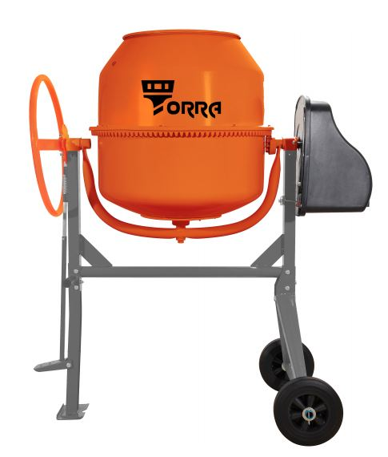

Вид СТМ · MIKA / TORRA
Стройка
Тачки, бетоносмесители, мембраны/плёнки, метизы — под задачу объекта.
- Тачки — садовая легче; строительная усиленная для бетона/щебня; 1 или 2 колеса.
- Бетоносмесители — MIKA и TORRA, подбирайте по объёму барабана.
- Мембраны — AM гидро-ветро; A / B / C / D — разные задачи паро/гидроизоляции.
- Метизы — саморезы, кровельные, крепёж DIN; смотрите фасовку.



Тест для самоконтроля
Строительный ассортимент. Отметьте ответы и нажмите «Проверить».